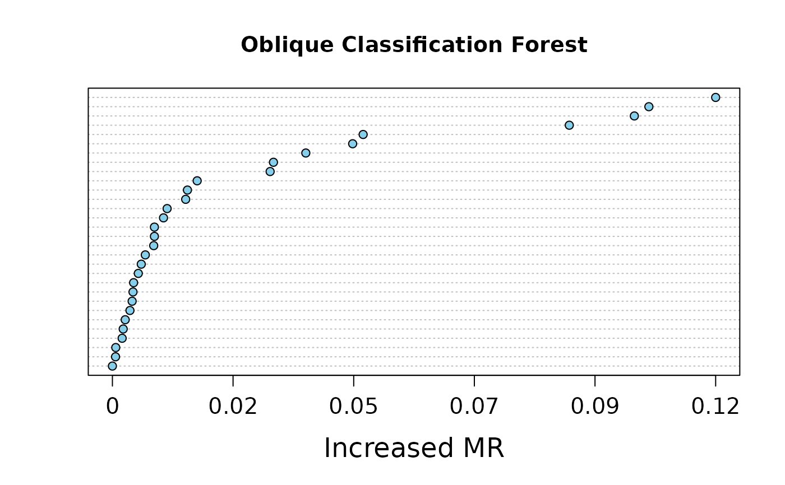

Dotchart of variable importance as measured by a Oblique Decision Random Forest.
Usage
# S3 method for VarImp
plot(x, nvar = 30, digits = NULL, main = NULL, ...)Arguments
- x
An object of class
VarImp.- nvar
How many variables to show.
- digits
Integer indicating the number of decimal places (round) or significant digits (signif) to be used.
- main
plot title.
- ...
Arguments to be passed to methods.
Value
The horizontal axis is the increased error of ODRF after replacing the variable, the larger the increased error the more important the variable is.
Examples
data(breast_cancer)
set.seed(221212)
train <- sample(1:569, 200)
train_data <- data.frame(breast_cancer[train, -1])
test_data <- data.frame(breast_cancer[-train, -1])
forest <- ODRF(diagnosis ~ ., train_data, split = "entropy", parallel = FALSE)
(varimp <- VarImp(forest, train_data[, -1], train_data[, 1]))
#> $varImp
#> varible increased_error
#> fractal_dimension_worst 30 0.42992212
#> symmetry_worst 29 0.42850197
#> concave.points_worst 28 0.42650705
#> concavity_worst 27 0.41517189
#> compactness_worst 26 0.38308887
#> smoothness_worst 25 0.38151431
#> area_worst 24 0.37088375
#> perimeter_worst 23 0.29932494
#> texture_worst 22 0.28394809
#> radius_worst 21 0.27747991
#> smoothness_se 15 0.21774389
#> area_se 14 0.21730274
#> compactness_se 16 0.21682116
#> concavity_se 17 0.21263858
#> concave.points_se 18 0.21209052
#> symmetry_se 19 0.21184660
#> fractal_dimension_se 20 0.20898502
#> perimeter_se 13 0.20541689
#> texture_se 12 0.19976696
#> radius_se 11 0.19960121
#> symmetry_mean 9 0.18309565
#> fractal_dimension_mean 10 0.18256375
#> concave.points_mean 8 0.18109708
#> concavity_mean 7 0.16819483
#> compactness_mean 6 0.09269618
#> smoothness_mean 5 0.08060524
#> area_mean 4 0.07734011
#> perimeter_mean 3 0.06640802
#> texture_mean 2 0.02868751
#> radius_mean 1 0.02380615
#>
#> $split
#> [1] "entropy"
#>
#> attr(,"class")
#> [1] "VarImp"
plot(varimp, digits = 0)
